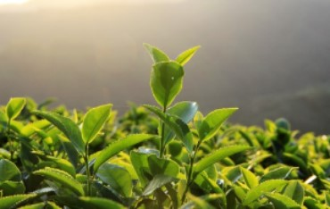
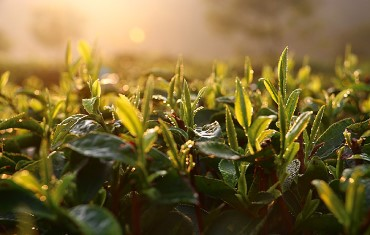

茶叶动态
柑普茶为此火爆？其品质又有哪些特点？

咖啡受欢迎 年轻人为什么就不喜欢喝茶？

喝茶到底从好的开始喝还是一般的？
茶叶过了保质期，到底能不能喝？
只能说不是绝对的,为了最佳的品饮效果，在保质期内喝完是最好的。但茶叶的品质关键还是看保存， 保存不好的茶没过保质期也可能变质，保存得好的茶即使过期了也还能喝。也就是说过期与变质并不能划等号。 详情
3种方式泡这款“网红茶”，差距竟然这么大？
过去的一年，微姐的朋友圈几乎被满屏的“柑普茶”霸占，尤其是种子选手“小青柑”，年少成名，年纪轻轻就在柑普茶圈子里混得风生水起，好让其他茶类羡慕不已，还被很多人亲切称为“小心肝”。 详情
用紫砂壶泡绿茶有哪些讲究?
一说起宜兴紫砂壶，大多数人想到的可能是用于冲泡普洱、黑茶、大红袍、铁观音等发酵程度较重的茶类；而一些喜欢喝绿茶、又喜欢紫砂壶的朋友通常会有这样的疑问：紫砂壶可以泡绿茶吗？ 详情
柑普茶为此火爆？其品质又有哪些特点？
近年来，柑普茶作为茶叶细分领域的耀眼黑马，引发了广大茶友热捧的风潮。柑普茶为此火爆？其品质又有哪些特点？今天，我们将通过对比品评两款柑普茶，来感受它的魅力所在。 详情
咖啡受欢迎 年轻人为什么就不喜欢喝茶？
随着星巴克咖啡在中国遍地开花，受到了不少年轻人的热捧，越来越多年轻人喜欢喝上了这外来的时尚咖啡，而中国茶在年轻人的日常生活品饮中鲜有出现。年轻人为什么不喜欢喝茶，究竟原因会出在哪里呢？ 详情